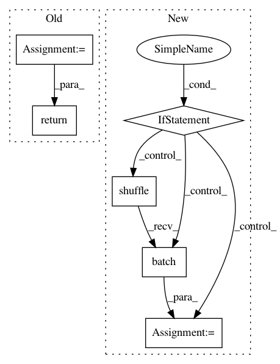

54a5a577d06acce4d13aa8d564c85e8d57ac00e7,research/gan/cyclegan/data_provider.py,,_provide_custom_dataset,#Any#Any#Any#Any#Any#,72
Before Change
_, image_bytes = image_reader.read(filename_queue)
image = tf.image.decode_image(image_bytes)
image_patch = full_image_to_patch(image, patch_size)
if shuffle:
return tf.train.shuffle_batch(
[image_patch],
batch_size=batch_size,
num_threads=num_threads,
capacity=5 * batch_size,
min_after_dequeue=batch_size)
else:
return tf.train.batch(
[image_patch],
batch_size=batch_size,
After Change
Raises:
ValueError: If no files match `image_file_pattern`.
if not tf.gfile.Glob(image_file_pattern):
raise ValueError("No file patterns found.")
filenames_ds = tf.data.Dataset.list_files(image_file_pattern)
bytes_ds = filenames_ds.map(tf.io.read_file, num_parallel_calls=num_threads)
images_ds = bytes_ds.map(
tf.image.decode_image, num_parallel_calls=num_threads)
patches_ds = images_ds.map(
lambda img: full_image_to_patch(img, patch_size),
num_parallel_calls=num_threads)
patches_ds = patches_ds.repeat()
if shuffle:
patches_ds = patches_ds.shuffle(5 * batch_size)
patches_ds = patches_ds.prefetch(5 * batch_size)
patches_ds = patches_ds.batch(batch_size)
return patches_ds
In pattern: SUPERPATTERN
Frequency: 3
Non-data size: 6
Instances
Project Name: tensorflow/models
Commit Name: 54a5a577d06acce4d13aa8d564c85e8d57ac00e7
Time: 2018-09-29
Author: joelshor@google.com
File Name: research/gan/cyclegan/data_provider.py
Class Name:
Method Name: _provide_custom_dataset
Project Name: GoogleCloudPlatform/cloudml-samples
Commit Name: b198dc46455cc467759b9d8b51c37809ec6248e0
Time: 2018-10-20
Author: gogasca@google.com
File Name: boston/keras/trainer/model.py
Class Name:
Method Name: input_fn
Project Name: GoogleCloudPlatform/cloudml-samples
Commit Name: 1179e6e7b0caf883b32c4f466208e3373450c1d2
Time: 2018-10-15
Author: gogasca@google.com
File Name: imdb/keras/trainer/model.py
Class Name:
Method Name: input_fn